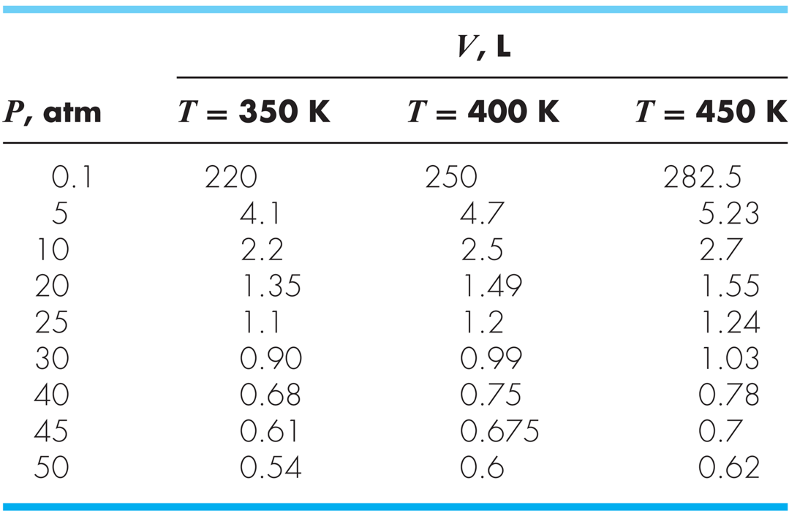
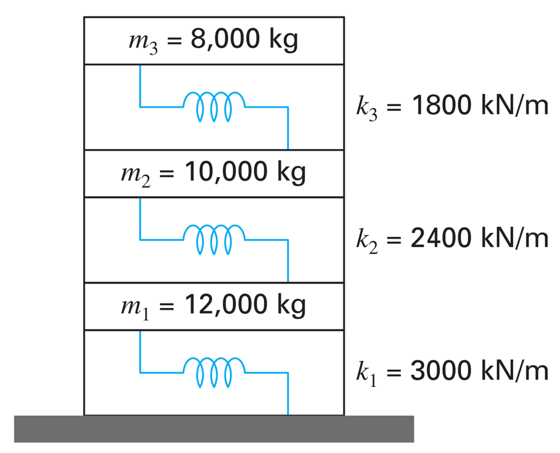
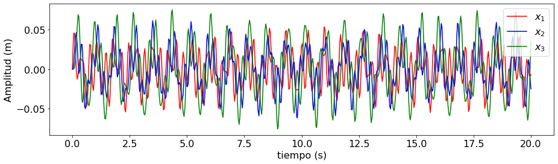
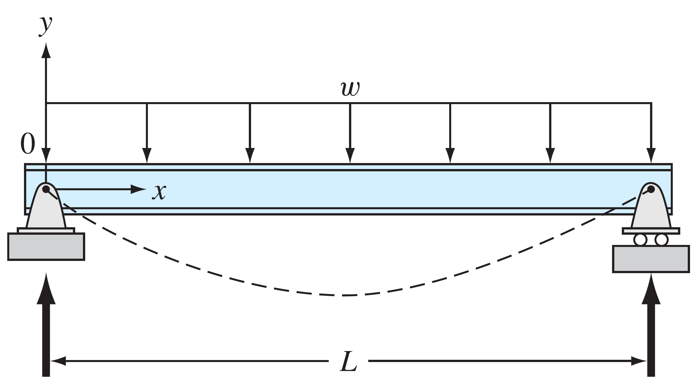
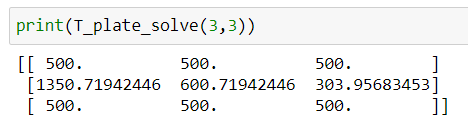

Repaso Parte 3 - Métodos numéricos para ecuaciones diferenciales
Contents
MEC301 - Métodos Numéricos
Repaso Parte 3 - Métodos numéricos para ecuaciones diferenciales#
Profesor: Francisco Ramírez Cuevas
Derivación numérica#
Tarea 4, problema 2#
La entalpía de un gas real es una función de la presión en la forma:
donde \(V\) es el volumen del gas en litros (\(\mathrm{L}\)), \(T\) y \(T_0\) son temperarturas en Kelvin (\(\mathrm{K}\)), \(P\) y \(P_0\) son presiones en atmósferas (\(\mathrm{atm}\)), y \(\left(\frac{\partial V}{\partial T}\right)_{P,T_0}\) es la derivada de \(V\) respecto a \(T\) evaluada en una presión \(P\) y temperatura \(T_0\).
Considerando la siguiente tabla de \(V\) en función de \(T\) y \(P\):
{kind=link}
Determine \(H\) en \(\mathrm{L}\cdot\mathrm{atm}\) para \(T_0 = 400\) K y \(P_0 = 50\) atm.
Considere el límite inferior de la integral como 0.1 atm.
# importamos datos a un arreglo numpy
import numpy as np
V = np.array([[220.0, 4.10, 2.2, 1.35, 1.10, 0.90, 0.68, 0.61 , 0.54],
[250.0, 4.70, 2.5, 1.49, 1.20, 0.99, 0.75, 0.675, 0.60],
[282.5, 5.23, 2.7, 1.55, 1.24, 1.03, 0.78, 0.700, 0.62]])
V = V.T
P = np.array([0.1, 5, 10, 20, 25, 30, 40, 45, 50])
T = np.array([350, 400, 450])
print('V =\n', V)
V =
[[220. 250. 282.5 ]
[ 4.1 4.7 5.23 ]
[ 2.2 2.5 2.7 ]
[ 1.35 1.49 1.55 ]
[ 1.1 1.2 1.24 ]
[ 0.9 0.99 1.03 ]
[ 0.68 0.75 0.78 ]
[ 0.61 0.675 0.7 ]
[ 0.54 0.6 0.62 ]]
# opción 1. Usando diferencia central
# derivada dVdT para T = 400 K (0.5 pts)
dVdT = (V[:,2] - V[:,0])/(T[2] - T[0])
# integral del arreglo generado (0.5 pts)
H = np.trapz(V[:,1] - T[1]*dVdT,P)
print('La entalpía del gas es: H = %.5f L*atm' % H)
La entalpía del gas es: H = 21.44100 L*atm
# opción 2. Usando gradient
# Derivada dVdT para T = 400 K (0.5 pts)
tt, pp = np.meshgrid(T, P)
dVdT_grad = np.gradient(V,T, axis = 1)
# Integral del arreglo generado (0.5 pts)
H = np.trapz(V[:,1] - T[1]*dVdT_grad[:,1],P)
print('La entalpía del gas es: H = %.5f L*atm' % H)
La entalpía del gas es: H = 21.44100 L*atm
Ecuaciones Diferenciales Ordinarias con Condiciones Inicial#
Tarea 4, problema 3#
En ingeniería es común utilizar sistemas masa-resorte para analizar vibraciones en estructuras bajo la influencia de fuerzas externas, como terremotos.
En la siguiente figura, se muestra un sistema masa-resorte para un edificio de 3 pisos. El análisis está limitado al moviento horizontal de cada componente.
{kind=link}
En base a la ley de Newton, el modelo matemático de este problema está dado por:
con condiciones inciales \(\dot{x}_1(0) = 1\) m/s, \(\dot{x}_2(0) = \dot{x}_3(0) = 0\) m/s, y \(x_1(0) = x_2(0) = x_3(0) = 0\) m.
La respuesta del sistema en el periodo de \(t=0\) a \(t = 20\) s es:
|
{kind=link}
(a) Utilizando solve_ivp, resuelva el sistema y grafique la evolución de \(x_1\), \(x_2\) y \(x_3\) en el periodo de \(t=0\) a \(t = 20\) s.
Por definición, \(\frac{dx_1}{dt} = \dot{x}_1\), \(\frac{dx_2}{dt} = \dot{x}_2\), y \(\frac{dx_3}{dt} = \dot{x}_3\). A partir de esto, el sistema \(\frac{d\vec{y} }{dt}= \vec{F}(t, \vec{y})\) está dado por:
El sistema es equivalente a un problema de la forma \(\frac{d\vec{y} }{dt} = \vec{F}(t,\vec{y})\):
import numpy as np
# Función F de ecuación diferencial (0.3 pts)
def F(t,y):
k1, k2, k3 = 3000E3, 2400E3, 1800E3 # constante de los resortes (N/m)
m1, m2, m3 = 12000, 10000, 8000 # masa de cada piso (kg)
f = np.zeros(6)
f[0] = -k1/m1*y[1] + k2/m1*(y[3] - y[1])
f[1] = y[0]
f[2] = +k2/m2*(y[1] - y[3]) + k3/m2*(y[5] - y[3])
f[3] = y[2]
f[4] = +k3/m3*(y[3] - y[5])
f[5] = y[4]
return f
# condiciones iniciales (0.1 pts)
y0 = np.array([1,0,0,0,0,0])
# Usamos solve_ivp para resolver el sistema (0.4 pts)
from scipy.integrate import solve_ivp
# Definimos rango de tiempo
tstart, tend = 0, 20 # tiempo incial y final
sol = solve_ivp(F,t_span = (tstart,tend), y0 = y0)
# retornamos nuestro resultado a las variables respectivas
x1_dot, x1 = sol.y[0,:], sol.y[1,:]
x2_dot, x2 = sol.y[2,:], sol.y[3,:]
x3_dot, x3 = sol.y[4,:], sol.y[5,:]
import matplotlib.pyplot as plt
# Graficar resultado (0.2 pts)
# formato del lienzo
fig, ax = plt.subplots(figsize=(15,4)) # Tamaño del lienzo
plt.rcParams.update({'font.size': 18}) # Tamaño de fuente
# graficamos la evolución de x1, x2 y x3
plt.plot(sol.t,x1,'r',label = '$x_1$')
plt.plot(sol.t,x2,'b',label = '$x_2$')
plt.plot(sol.t,x3,'g',label = '$x_3$')
# formateamos los ejes
plt.ylabel('Amplitud (m)')
plt.xlabel('tiempo (s)')
plt.legend()
plt.show()
Resolvamos este problema usando, por ejemplo, el método del punto medio

h = 0.0001 # paso de tiempo
t = np.arange(tstart,tend,h) # intervalo de tiempo
y = np.zeros((len(y0), len(t))) # arreglo para almacenar la variable y
y[:,0] = y0 # guardamos condición incial
for i in range(len(t)-1):
k1 = F(t[i], y[:,i])
k2 = F(t[i]+h/2, y[:,i] + k1*h/2)
y[:,i+1] = y[:,i] + h*k2
# retornamos nuestro resultado a las variables respectivas (0.1 pts)
x1_dot, x1 = y[0,:], y[1,:]
x2_dot, x2 = y[2,:], y[3,:]
x3_dot, x3 = y[4,:], y[5,:]
# Graficar resultado (0.2 pts)
# formato del lienzo
fig, ax = plt.subplots(figsize=(15,4)) # Tamaño del lienzo
plt.rcParams.update({'font.size': 18}) # Tamaño de fuente
# graficamos la evolución de x1, x2 y x3
plt.plot(t,x1,'r',label = '$x_1$')
plt.plot(t,x2,'b',label = '$x_2$')
plt.plot(t,x3,'g',label = '$x_3$')
# formateamos los ejes
plt.ylabel('Amplitud (m)')
plt.xlabel('tiempo (s)')
plt.legend()
plt.show()
Ecuaciones Diferenciales Ordinarias con Condiciones de Borde#
Tarea 5, problema 1#
{kind=link}
La ecuación diferencial para determinar la deflección \(y\) (en \(\mathrm{m}\)) a largo del eje \(x\) (en \(\mathrm{m}\)) de una viga de largo \(L\), simplemente apoyada y con una carga distribuida uniforme \(w\) es:
donde \(E\) es el módulo de elasticidad, y \(I\) es el momento de inercia. Las condiciones de borde son \(y(0) = y(L) = 0\).
Se desea determinar la distribución de \(y(x)\) para \(E = 200~\mathrm{GPa}\), \(I = 30.000~\mathrm{cm}^2\), \(w = 15~\mathrm{kN/m}\), y \(L=3~\mathrm{m}\).
(a) pts Resuelva el problema utilizando el método del disparo, implementado a través del método de Runge-Kutta de cuarto orden (RK4). En un gráfico, compare su solución con la solución exácta:
NOTA Aplique RK4 considerando un total de 10 nodos en la barra.
# Definimos los parámetros (0.1 pts)
E = 200E9 # Módulo de elasticidad (Pa)
I = 30000E-4 # Momento de inercia (m^2)
w = 15E3 # Carga distribuida (N/m)
L = 3 # Largo de la barra (m)
nt = 10 # número de nodos en la barra
# condiciones de borde
y0, yL = 0, 0
# Declaramos F con y[0] = y, y[1] = dydx (0.5 pts)
F = lambda t,y: np.array(
[y[1],
w*L*t/(2*E*I) - w*t**2/(2*E*I)])
# Creamos una función RK4 (0.8 pts)
def RK4(F,t_span, nt, f0):
h = (t_span[1] - t_span[0])/(nt - 1)
t = np.linspace(t_span[0],t_span[1],nt)
f = np.zeros((len(f0),len(t)))
f[:,0] = np.array(f0, dtype=object)
for i in range(len(t) - 1):
k1 = F(t[i] , f[:,i] )
k2 = F(t[i] + 1/2*h, f[:,i] + 1/2*k1*h)
k3 = F(t[i] + 1/2*h, f[:,i] + 1/2*k2*h)
k4 = F(t[i] + h, f[:,i] + k3*h)
f[:,i+1] = f[:,i] + 1/6*(k1 + 2*k2 + 2*k3 + k4)*h
return t, f
# buscamos la pendiente en el extremo izquierdo (0.3 pts)
from scipy.optimize import fsolve
def find_dy0(dy0):
t, y = RK4(F, [0, L], nt, [y0, dy0])
return y[0,-1] - yL
dy_sol = fsolve(find_dy0, x0 = -3E-8) # usamos solución exacta para ajustar un valor inicial
t, y = RK4(F, [0, L], nt, [y0, dy_sol])
%%capture showplot
# Graficamos ambas soluciones (0.3 pts)
import matplotlib.pyplot as plt
plt.figure(figsize = (9, 5)) # Tamaño del lienzo
plt.rcParams.update({'font.size': 18}) # Tamaño de fuente
# solución exacta
x = np.linspace(0,L,100) # puntos a gráficar
y_exact = w*L*x**3/(12*E*I) - w*x**4/(24*E*I) - w*L**3*x/(24*E*I) # solución exacta
plt.plot(x,y_exact*1E9,':k', label='exact') # gráfico de solución exacta
plt.plot(t,y[0,:]*1E9,'o r', label='numerical') # gráfico de solución numérica
plt.xlim(0,L)
plt.xlabel('Largo de la barra, x (m)')
plt.ylabel('Deflección, y (nm)')
plt.legend()
plt.grid()
plt.show()
showplot()
Diferencias finitas para EDP estacionaria#
Tarea 5, problema 2#
Se desea resolver el problema de difusión de calor 2D revisado en la unidad 11 mediante numpy.linalg.solve.
{kind=link}
Para esto, considere los siguientes pasos:
import numpy as np
from itertools import product
# definimos las constantes del problema
Ta = 500 # Temperatura al lado izquierdo (K)
Tb = 500 # Temperatura al lado derecho (K)
Too = 300 # Temperatura del aire (K)
h = 100 # Coeficiente convectivo (m^-1)
q0 = 1000 # flujo de calor (K/m)
L, H = 1, 1.5 # Largo y ancho de la cavidad (m)
(a) Implemente una función T_plate_Ab(Nx,Ny) que determine las matrices \(A\) y \(b\) del sistema de ecuaciones \(Ax = b\). Las condiciones de borde deben estar incluidas como coeficientes dentro la matriz \(A\), similar a la matriz para mallado 3x3 discutida en la unidad 11.
{kind=link}
Compruebe su función para A, b = T_plate_Ab(3,3)
{kind=link}
def T_plate_Ab(Nx,Ny):
# Definimos las características de la malla
nx, ny = Nx - 1, Ny - 1 # índice último nodo
dx, dy = L/(Nx - 1), H/(Ny - 1) # espaciamiento entre nodos
A = np.zeros((Nx*Ny,Nx*Ny))
b = np.zeros(Nx*Ny)
for i, j in product(range(Nx),range(Ny)): # loop sobre i y j
# condiciones de borde
if i == 0:
A[i*Ny + j,i*Ny + j] = 1
b[i*Ny + j] = Ta
elif i == nx:
A[i*Ny + j,i *Ny+ j] = 1
b[i*Ny + j] = Tb
elif j == 0:
A[i*Ny + j,i*Ny + j ] = 1
A[i*Ny + j,i*Ny + j+1] = -1
b[i*Ny + j] = dy*q0
elif j == ny:
A[i*Ny + j,i*Ny + j ] = (1 + dy*h)
A[i*Ny + j,i*Ny + j-1] = -1
b[i*Ny + j] = dy*h*Too
# nodos centrales
else:
A[i*Ny + j, i *Ny + j ] = -(2*dx**2 + 2*dy**2)
A[i*Ny + j,(i+1)*Ny + j ] = dy**2
A[i*Ny + j,(i-1)*Ny + j ] = dy**2
A[i*Ny + j, i *Ny + j+1] = dx**2
A[i*Ny + j, i *Ny + j-1] = dx**2
return A, b
A, b = T_plate_Ab(3,3)
print(A)
[[ 1. 0. 0. 0. 0. 0. 0. 0. 0. ]
[ 0. 1. 0. 0. 0. 0. 0. 0. 0. ]
[ 0. 0. 1. 0. 0. 0. 0. 0. 0. ]
[ 0. 0. 0. 1. -1. 0. 0. 0. 0. ]
[ 0. 0.5625 0. 0.25 -1.625 0.25 0. 0.5625 0. ]
[ 0. 0. 0. 0. -1. 76. 0. 0. 0. ]
[ 0. 0. 0. 0. 0. 0. 1. 0. 0. ]
[ 0. 0. 0. 0. 0. 0. 0. 1. 0. ]
[ 0. 0. 0. 0. 0. 0. 0. 0. 1. ]]
print(b)
[ 500. 500. 500. 750. 0. 22500. 500. 500. 500.]
(b) Implemente una función T_plate_solve(Nx,Ny) que, dado el número de nodos Nx y Ny para el eje x e y, determine la distribución de temperaturas en la placa. La función debe entregar el resultado en un arrreglo T de dimensiones Nx, Ny.
Como comprobación, considere:
{kind=link}
from numpy.linalg import solve
def T_plate_solve(Nx,Ny):
A, b = T_plate_Ab(Nx,Ny)
return solve(A, b).reshape(Nx,Ny)
print(T_plate_solve(3,3))
[[ 500. 500. 500. ]
[1350.71942446 600.71942446 303.95683453]
[ 500. 500. 500. ]]
(c) Para Nx, Ny = 51, 76, grafique la distribución de temperaturas en un mapa 2D. Incluya en su gráfico la distribución del flujo de calor \(q = - \nabla T\).
import matplotlib.pyplot as plt
from matplotlib import cm
Nx, Ny = 51, 76 # total de nodos
Tsol = T_plate_solve(Nx, Ny) # distribución de temperaturas
x = np.linspace(0,L,Nx) # coordenadas x
y = np.linspace(0,H,Ny) # coordenadas y
xx, yy = np.meshgrid(x,y) # malla x-y
skip = (slice(None, None, 5), slice(None, None, 5))
qy, qx = np.gradient(Tsol.T,y,x) # gradiente
plt.figure(figsize = (7, 7))
plt.rcParams.update({'font.size': 18})
plt.pcolor(xx, yy, Tsol.T, cmap=cm.get_cmap(cm.plasma))
plt.colorbar(label="Temperatura (°C)", orientation="vertical")
plt.quiver(xx[skip],yy[skip],- qx[skip],- qy[skip]) # campo vectorial de q
plt.xlabel('x (m)')
plt.ylabel('y (m)')
plt.axis('scaled')
plt.show()